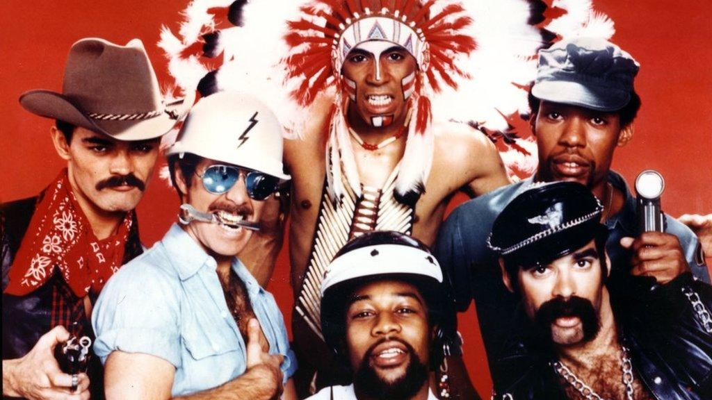

Lyrics Y. M. C. A.
Welcome, and enjoy your listening Y.M.C.A
Village People
Original Video

Young man, there's no need to feel down
I said, young man, pick yourself off the groundI said, young man, 'cause your in a new town
There's no need to be unhappy
This is unordered lists
- Young man, there's a place you can go
- I said, young man, when you're short on your dough
- You can stay there, and I'm sure you will find
- Many ways to have a good time.
It's fun to stay at the Y.M.C.A.
It's fun to stay at the Y.M.C.A.
They have everything
For young men to enjoy.
You can hang out with all the boys.
It's fun to stay at the Y.M.C.A.
It's fun to stay at the Y.M.C.A.
You can get yourself clean
You can have a good meal
You can do whatever you feel.
This is a ordered lists
- Young man, Are you listening to me
- I said, young man, what do you want to be
- I said, young man, you can make real your dreams,
- but you've got to know this one thing.
- No man, does it all by himself
- I said, young man, put your pride on the shelf
- And just go there, to the Y.M.C.A.
- I'm sure they can help you today
- It's fun to stay at the Y.M.C.A.
- It's fun to stay at the Y.M.C.A.
- They have everything
- For young men to enjoy.
You can hang out with all the boys.
It's fun to stay at the Y.M.C.A.
It's fun to stay at the Y.M.C.A.
You can get yourself clean
You can have a good meal
You can do whatever you feel.
Young Man, I was once in your shoes,
I said, I was down and out with the blues
I felt, no man cared if I were alive
I felt the whole world was so jive
That's when someone came up to me and said
Young man take a walk up the street
There's a place there called the Y.M.C.A.
They can start you back on your way.
It's fun to stay at the Y.M.C.A.
It's fun to stay at the Y.M.C.A.
They have everything
For young men to enjoy.
You can hang out with all the boys.
Y.M.C.A.It's fun to stay at the Y.M.C.A.
It's fun to stay at the Y.M.C.A.
Young man, Young man, there's no need to feel down
Young man, Young man, pick yourself off the ground
Y.M.C.A.
just go to the Y.M.C.A.
Young Man, Young Man, I was once in your shoes,
Young Man, Young Man, I was out with the blues
Y.M.C.A.
Y.M.C.A.
Y.M.C.A.
Y.M.C.A.
Y.M.C.A.
Y.M.C.A.